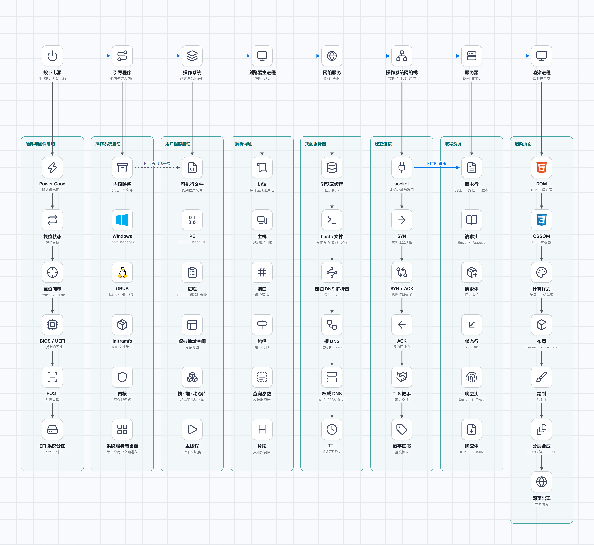

计算机系统全景：从开机到访问网站
本章目录 · 1 节
计算机系统全景：从开机到访问网站的过程
学习指南：这一章从按下电源讲起，一直走到网页出现在屏幕上。遇到新名词时先不用背，只问两个问题：这一步接过了什么？它又为下一步准备了什么？
0. 全流程概览
你按下电脑的电源键。
过了一会儿，桌面出现了。你打开浏览器，输入一个网址，再按下回车。
网页出现了。
看上去只有三个动作：开机、打开浏览器、输入网址。
从按下电源到网页出现，可以分成四个阶段：
- 硬件与固件启动：接通电源，让 CPU 开始执行，并找到引导程序。
- 操作系统启动：引导程序装入内核，内核启动驱动、文件系统和系统服务。
- 用户程序启动：创建浏览器进程，把程序代码装入内存，再交给 CPU 执行。
- 访问网站：解析网址、找到服务器、建立连接、取得资源并渲染页面。
这四个阶段像四棒接力。硬件先把 CPU 唤醒，操作系统才有机会启动；操作系统准备好运行环境，浏览器才能成为进程；浏览器运行起来，才谈得上访问网站。
第一阶段：硬件与固件启动
很多人会觉得，按下电源键之后，电脑就开始“启动 Windows”。
其实还早。
刚通电时，内存里没有正在运行的操作系统，屏幕上也没有桌面。电脑首先要做的，只是让硬件进入稳定状态，然后让 CPU 开始执行第一条指令。
1. 按下电源：让 CPU 开始执行
电源按钮并不会直接把 Windows 打开。
它先向主板发送一个开机信号。电源开始提供稳定的电压，主板确认供电正常后，CPU 才会离开复位状态。
这里的“确认供电正常”不是一句客套话。电脑里的不同部件需要不同电压，而且电压刚升起来时可能还不稳定。电源会等各路电压进入允许范围，再向主板发送一个常被称为 Power Good 的信号。
在这个信号到来之前，主板让 CPU 保持在复位状态。复位不是关机，而是把 CPU 内部的重要寄存器放回规定的初始值，暂时不让它乱跑。时钟信号稳定、供电确认正常后，主板才解除复位。
可以把它想成剧场开门前的准备：
- 电源接通了，灯光和音响有电。
- 舞台设备进入规定的初始状态。
- 演员可以开始按照剧本行动。
这时，CPU 已经能执行指令了。
此时可以把状态写成：
电源稳定 → 时钟稳定 → CPU 解除复位 → 准备读取第一条指令
但问题来了：第一条指令在哪里？
2. CPU 从哪里开始？
CPU 不能随便从内存里挑一个位置开始运行。那样每次开机都会得到不同结果。
所以，处理器被设计成：复位完成后，从一个规定好的入口开始取指。这个入口会把执行过程带到主板上的固件，也就是常说的 BIOS / UEFI。
这个规定好的入口通常叫做复位向量（Reset Vector）。它不是一整套操作系统，只是 CPU 开机后必定会访问的第一个地址。这个地址里的指令再把 CPU 带到固件的主要代码。
固件保存在主板上的非易失性存储芯片中。它和普通内存不同：断电后，固件代码仍然存在。否则电脑每次断电都会忘记自己该怎样开机。
关键点：开机的第一步，不是加载桌面，而是让 CPU 从一个确定的位置开始执行。
现在 CPU 醒了，固件也开始运行了。
可是它仍然不知道操作系统装在哪块硬盘上。
所以还需要下一步。
3. UEFI 寻找引导程序
UEFI 是电脑启动后最早运行的软件之一。
CPU 刚进入 UEFI 时，很多硬件还不能直接使用。UEFI 会先做开机自检，也就是常说的 POST，并初始化启动必需的部件，例如内存控制器、键盘和系统盘控制器。
它的任务不是长期管理文件，也不是帮你打开浏览器。它主要完成三件事：
- 检查并初始化启动需要的关键硬件。
- 按保存的启动顺序查找可启动的设备。
- 找到一个可以继续启动电脑的程序。
这个程序叫做 引导程序（Bootloader）。
在常见的 UEFI 电脑上，固件会读取保存好的启动项。启动项会指向系统盘上一个专门的 EFI 系统分区，里面放着以 .efi 形式存在的引导程序。可以把这条寻找路线写成：
UEFI 保存的启动项
↓ 指向哪块磁盘、哪个分区、哪个文件
EFI 系统分区
↓
引导程序 .efi 文件
为什么不能直接运行操作系统？
操作系统很大。
Windows、macOS 或 Linux 的内核都存放在硬盘里。CPU 不能隔着硬盘直接执行它们，必须先把需要的代码读到内存。
但谁来做这件事？
就是引导程序。
整个过程可以简化成：
UEFI
↓ 找到启动项
引导程序
↓ 把内核读入内存
操作系统内核
如果电脑显示 No bootable device，这句话其实提供了一个很重要的线索：
- 电脑已经通电。
- CPU 和固件已经运行。
- 但固件没有找到能继续启动的系统。
所以，这时候应该检查硬盘和启动项，而不是检查浏览器。
关键点：UEFI 像一个领路人。它不负责启动完整的操作系统，只负责找到引导程序，并把接下来的工作交给它。
到这里，第一阶段解决的是“CPU 从哪里开始、系统盘在哪里”。系统已经被找到了，却还躺在磁盘上。下一阶段要解决的是：怎样让磁盘里的操作系统真正运行起来？
第二阶段：操作系统启动
接过 UEFI 的工作后，引导程序面对的是一个内核文件。它不能把这个文件留在磁盘里，因为 CPU 要从内存中取得接下来要执行的指令。
所以从“找到系统”到“看到桌面”，还要完成三次交接：
UEFI → 引导程序 → 内核 → 系统服务与桌面
4. 引导程序把内核装入内存
操作系统的核心代码保存在系统盘上，通常叫做内核映像。它现在只是一个文件。
CPU 不能直接执行硬盘里的文件。CPU 取指令的位置是内存，所以引导程序要先完成下面的工作：
- 在系统分区里找到内核映像。
- 把内核需要的代码和数据读入内存。
- 准备启动参数，例如内存布局和硬件信息。
- 把 CPU 的执行位置跳到内核入口。
不同系统使用的引导程序不同，例如 Windows Boot Manager 或 Linux 常见的 GRUB；名称不同，交接思路相同。
内核映像有时还是压缩的。引导程序会把它和启动初期需要的文件一起放进内存。在 Linux 中，这份临时文件集合常叫 initramfs；它里面可能包含读取真正系统盘所需的驱动和工具。
引导程序还会向内核交出一张“现场清单”：哪些内存可以使用、启动参数是什么、固件提供了哪些信息。内核刚接手时没有时间重新猜测这些内容。
到第 4 步，引导程序的任务就结束了。接下来执行的已经是内核代码。
系统盘 内存
┌────────────┐ ┌────────────┐
│ 内核映像文件 │ ──读取──→ │ 正在等待执行 │
└────────────┘ └────────────┘
↑
CPU 从这里取指
这里要分清两件事：
- 保存在磁盘上：代码不会因为存在就自动运行。
- 装入内存并交给 CPU：代码才真正开始执行。
这个区别后面启动浏览器时还会再出现一次。
现在内核已经进入内存，引导程序也把 CPU 跳到了内核入口。可内核刚接手时，键盘、硬盘、显卡和内存还没有被统一管理。它必须先把计算机的基本秩序建立起来。
5. 内核接管硬件
内核启动后，先建立操作系统最基本的运行环境。
内核运行在 CPU 的高权限模式中。普通应用不能直接修改页表、控制硬件或随意读取别的进程内存；这些危险操作要经过内核。这道权限边界，正是操作系统能隔离程序的基础。
内核要管理电脑里最重要的资源：
- CPU：现在该运行哪个程序？
- 内存：每个程序可以使用哪一块空间？
- 硬盘：文件放在哪里，怎样读取？
- 设备：键盘、鼠标、显卡和网卡怎样使用？
如果没有操作系统，每个应用都要自己学会控制几千种硬盘、显卡和网卡。
这显然不现实。
所以操作系统把复杂的硬件包装成一套统一的服务。浏览器只需要说“帮我读取这个文件”“帮我发送这些数据”“帮我画一个窗口”，不用亲自控制硬件电路。
内核的启动可以先按这个顺序理解：
建立内存管理
↓
启动进程调度器
↓
加载关键设备驱动
↓
挂载文件系统
↓
启动第一个用户空间进程
不同操作系统的名称和细节不完全相同，但目标一样：先把“运行其他程序所需的公共环境”准备好。
这些工作之间也有依赖关系：
- 先管理内存：后面的驱动和进程才知道内存怎样申请、怎样隔离。
- 再建立中断和调度：键盘输入、磁盘完成读取等事件才能通知 CPU，多个程序也才能轮流运行。
- 再加载驱动：内核才能用统一方式控制具体型号的硬盘、显卡和网卡。
- 再挂载文件系统：系统才看得到磁盘上的目录、配置和程序文件。
所谓中断，可以先理解成硬件发给 CPU 的“有事情完成了”通知。没有它，CPU 就只能不断询问硬盘：“读完了吗？读完了吗？”有了中断，CPU 可以先做别的事，等硬盘完成后再回来处理。
为什么驱动要在桌面之前启动？
屏幕、键盘、硬盘和网卡都是设备。内核需要通过驱动和它们通信。
例如，系统没有识别出系统盘，就无法继续读取系统文件；没有显卡驱动，也无法正常绘制桌面。桌面不是操作系统启动的第一步，而是前面这些能力准备好后的结果。
内核已经把底层资源管起来了，但它不会亲自绘制图标、任务栏和窗口。接下来，它要启动第一批普通程序，让这些程序继续搭出用户能操作的桌面。
6. 从内核到桌面
内核本身不会画出你熟悉的桌面。它会先启动一个不属于内核的普通系统程序，也就是第一个用户空间进程。这个程序再继续启动其他服务，例如：
- 登录与用户会话；
- 网络服务；
- 图形界面；
- 文件管理和后台服务。
等图形界面启动完成，你才会看到桌面。
图形界面本身也是一组程序。窗口管理器或合成器负责决定窗口的位置、层级和最终画面；登录程序负责确认用户身份；后台服务负责网络、声音、时间同步等功能。它们都在使用内核已经提供的进程、文件和设备能力。
因此，“操作系统”和“桌面”不是同一个东西：
内核：提供底层管理能力
↓
系统服务：准备登录、网络、声音等功能
↓
桌面程序：显示窗口、图标和任务栏
此时可以确定：
- 内核已经运行；
- 内存、进程和设备可以被管理；
- 文件系统可以读取程序文件；
- 用户程序已经具备启动条件。
但浏览器仍然没有运行。桌面上的浏览器图标，只是一个启动入口。
第三阶段：用户程序启动
第二阶段结束时，操作系统已经准备好了“运行程序”的能力。现在你点击浏览器图标，我们就沿着这个动作继续往下看：一张图标，怎样变成屏幕上的浏览器窗口？
7. 点击图标后，操作系统先找到程序文件
磁盘里虽然已经有 Chrome、Edge 或 Safari 的程序文件，但文件只是静静地躺在那里。
点击浏览器图标后，桌面程序把“启动这个应用”的请求交给操作系统。操作系统根据图标记录的路径，找到浏览器的可执行文件。
程序文件里不只有 CPU 指令。它还记录了：
- 哪些部分是程序代码；
- 哪些部分是初始数据；
- 从哪个入口开始执行；
- 运行时需要哪些动态库。
操作系统读取这些信息，才知道该怎样启动它。
这种文件有固定格式。Windows 常见的是 PE，Linux 常见的是 ELF，macOS 常见的是 Mach-O。格式不同，但文件头都会告诉加载器：代码在哪一段、数据在哪一段、入口地址在哪里。
操作系统还会检查这个文件是否存在、当前用户有没有执行权限、文件格式是否适合当前 CPU。如果这些检查失败，进程甚至不会被创建。
不过，“知道怎样启动”仍不等于“已经运行”。同一个浏览器可以同时开多个独立进程，所以操作系统还要为这一次运行单独准备身份、内存和执行状态。
8. 操作系统创建浏览器进程
接下来，内核为这次运行创建一个进程。
可以先把进程理解成操作系统为“这一次运行”建立的档案和工作区。同一个浏览器打开两次，可以得到两个不同的进程；它们使用同一份程序文件，却拥有各自的运行状态。
一个进程至少会得到：
- 一个进程编号，也就是 PID，类似这次运行的学号；
- 一套独立的虚拟地址空间，也就是它眼中的“内存地图”；
- 打开的文件、权限等运行状态；
- 至少一个可以被 CPU 调度的线程，也就是实际向前执行的工作线。
内核会用一份数据结构记录这些信息。它通常叫进程控制块，可以把它理解成内核里的进程档案。调度器要找进程、暂停进程或恢复进程时，都会查看这份档案。
然后，操作系统把浏览器需要的内容映射到进程的虚拟内存：
浏览器进程的虚拟内存
┌──────────────────┐
│ 栈：函数调用、局部变量 │
├──────────────────┤
│ 空闲空间 │
├──────────────────┤
│ 堆：运行时动态分配 │
├──────────────────┤
│ 动态库 │
├──────────────────┤
│ 浏览器代码与只读数据 │
└──────────────────┘
这里常说“把程序加载进内存”，但真实系统通常不会一次性复制整个浏览器。
虚拟内存也不是一块额外安装的内存条。它是一套地址翻译机制：浏览器使用自己的虚拟地址，CPU 和内核通过页表把它翻译成物理内存地址。不同进程即使都使用地址 0x1000，也可以落到完全不同的物理位置，因此互不干扰。
进程内常见的几块区域各有用途：
- 代码区：主要存放 CPU 要执行的指令，通常不允许程序随意修改。
- 动态库区：放浏览器和系统共同使用的功能，例如图形、网络和字体库。
- 堆：程序运行时按需申请的空间，例如新建一个标签页对象。
- 栈：保存函数调用过程、参数和局部变量，每个线程通常有自己的栈。
操作系统会先建立“程序文件的哪一部分对应哪一段虚拟内存”的关系。等程序真的访问某一页，而它还不在物理内存时，CPU 会触发缺页异常，内核再把那一页从磁盘读进来。这个机制叫按需分页。
动态库也在这时参与进来。加载器要找到浏览器依赖的库，并由动态链接器把“浏览器调用的函数名”连接到库里真正的代码地址。缺少关键动态库时，程序可能在窗口出现之前就启动失败。
所以更准确的过程是：
建立虚拟内存映射 → 访问某一页 → 缺页 → 从磁盘读入物理内存 → 继续执行
你现在不用记住页表的细节，但要抓住一件事：程序看到的是自己的虚拟地址空间，具体放在哪块物理内存，由操作系统管理。
至此，浏览器已经有了进程、内存和需要的代码，好比演员已经换好服装、站在候场区。最后还差一步：调度器要真的把 CPU 交给它。
9. 主线程得到 CPU，浏览器开始运行
内存准备好以后，内核创建浏览器的主线程，把它的第一条指令位置设为程序入口。
线程不是创建后就一直占着 CPU。它先进入“可运行”状态，再由内核调度器选择合适的时间片，把 CPU 交给它。
如果可运行的程序很多，调度器会让它们轮流使用 CPU。切换时，内核先保存当前线程的寄存器和执行位置，再恢复下一个线程先前保存的状态。这个过程叫上下文切换。
正因为切换速度很快，即使 CPU 核心数少于正在运行的线程数，我们仍会感觉浏览器、音乐和聊天软件在“同时”工作。
浏览器主线程：可运行
↓ 调度器选择
CPU 执行浏览器入口代码
↓
初始化窗口、配置、网络和渲染模块
现代浏览器通常还会继续创建多个进程：
| 进程或服务 | 主要工作 |
|---|---|
| 浏览器主进程 | 管理窗口、标签页、地址栏和用户操作 |
| 网络服务 | 处理 DNS、连接和 HTTP 请求 |
| 渲染进程 | 解析网页代码并生成画面 |
| GPU 进程 | 把需要的图层交给显卡合成 |
不同浏览器的划分会有差异，但不会把所有工作都塞在一个地方。
多进程会多占一些内存，但也换来了隔离：某个网页的渲染进程崩溃时，浏览器主窗口和其他标签页不一定跟着退出；网页代码也更难直接碰到浏览器主进程掌握的敏感资源。
现在再回看“打开浏览器”，背后实际发生的是：
- 找到浏览器的程序文件。
- 创建进程和虚拟地址空间。
- 映射代码、数据和动态库。
- 创建主线程并交给调度器。
- CPU 开始执行浏览器代码。
- 浏览器再启动网络、渲染等组件。
这次正在运行的浏览器，叫做一个 进程（Process）。
可以这样理解：
- 程序像一份菜谱，放在硬盘里。
- 进程像正在按照菜谱做菜，已经占用了锅、灶台和食材。
关键点：浏览器窗口能打开，证明浏览器进程已经运行；它并不能证明网络一定正常。
断网时，浏览器依然可以打开设置页面或本地文件。
现在，浏览器窗口已经出现，第三阶段完成了。接下来你把网址交给这个正在运行的浏览器，工作才会从“启动程序”转到“访问网站”。
第四阶段：访问网站
前一阶段只保证浏览器能运行，并没有联系任何服务器。你在地址栏输入网址并按下回车后，浏览器首先要弄清楚：这串文字指向哪里？
10. 浏览器主进程解析 URL
地址栏属于浏览器主进程。它先判断输入的是搜索词还是 URL；确认是 URL 后，才会继续拆解其中的信息。
我们就用当前页面的地址来观察：
http://127.0.0.1:5173/easy-vibe/zh-cn/appendix/...
浏览器不会把它当成一整块文字。它会拆成几部分：
http:// 127.0.0.1 :5173 /easy-vibe/zh-cn/appendix/...
协议 主机 端口 路径
这些部分分别回答不同的问题：
- 协议：用什么规则通信？这里是 HTTP。
- 主机：要找哪台电脑？
- 端口：要找这台电脑里的哪个程序？
- 路径：要向这个程序索取哪份资源？
完整 URL 还可能带有另外两部分：
https://example.com/search?q=computer#result
└──查询参数──┘ └片段┘
- 查询参数会随 HTTP 请求发给服务器，常用来表示搜索词、页码或筛选条件。
- 片段通常只给浏览器自己使用，例如滚动到页面里的某个标题，一般不会发送给服务器。
如果 URL 没写端口，浏览器会使用协议的默认值：HTTP 通常是 80，HTTPS 通常是 443。所以“不写端口”不等于“没有端口”。
浏览器还会处理特殊字符编码，并检查 URL 是否符合规则。完成这些工作后，它才得到一组明确的信息：使用什么协议、联系哪个主机的哪个端口、请求哪条路径。
127.0.0.1 是谁？
127.0.0.1 指向的不是远方服务器，而是你正在使用的这台电脑。
它还有一个常见名字：localhost。
而 5173 是本地开发服务器监听的端口。你可以把端口理解成一栋大楼里的房间号：电脑地址告诉你是哪栋楼，端口告诉你该敲哪扇门。
所以，访问这个页面时：
- 数据没有跑到公网。
- 不需要把域名查询成 IP。
- 浏览器直接去找本机 5173 端口上的程序。
如果页面提示 Connection refused，很可能是本地开发服务器没有启动，或者端口写错了。
如果输入的是域名呢？
如果我们访问的是：
https://www.example.com/page
浏览器看到的是 www.example.com，但网络通信通常需要 IP 地址。
于是出现了下一个问题：域名怎样变成 IP 地址？
确认这是一个网址后，主进程把网络任务交给浏览器的网络服务。后面的 DNS、连接和 HTTP，主要由网络服务与操作系统的网络栈协作完成；渲染进程这时还没有拿到网页代码。
11. DNS 查询服务器地址
DNS 可以理解成互联网的地址查询服务。
你给它一个域名：
www.example.com
它返回对应的 IP 地址：
93.184.216.34
浏览器拿到 IP 后，才知道应该去联系哪台服务器。
不过，浏览器并不一定每次都去远方重新查询。它会先按由近到远的顺序寻找答案：
浏览器缓存
↓ 没有
操作系统 DNS 缓存 / hosts 文件
↓ 没有
递归 DNS 解析器（家庭路由器、运营商或公共 DNS）
前两处有答案就可以直接返回。都没有时，操作系统把问题交给递归 DNS 解析器。
递归 DNS 解析器怎样找到答案？
假设要查询 www.example.com，而递归解析器也没有缓存，它会沿着域名从右往左问：
根 DNS：谁负责 .com？
↓ 返回 .com 顶级域 DNS 的地址
.com DNS：谁负责 example.com？
↓ 返回 example.com 权威 DNS 的地址
权威 DNS：www.example.com 是什么地址？
↓ 返回 A / AAAA 记录
递归解析器把结果交还给浏览器
- A 记录通常保存 IPv4 地址。
- AAAA 记录通常保存 IPv6 地址。
- 有些域名先返回 CNAME，表示它是另一个域名的别名，还要继续查询。
DNS 答案还带有 TTL，告诉缓存这份答案能保存多久。TTL 到期后，解析器才需要重新查询。这就是域名记录修改后，有些人立刻生效、有些人还看到旧地址的原因。
关键点：DNS 只负责把名字变成地址。它不负责传输网页，也不决定网页路径是否存在。
这也解释了一个常见现象：
- 用 IP 可以访问。
- 换成域名却访问不了。
两次访问最大的区别就是 DNS，所以应该先检查域名解析。
现在地址找到了。
但是，知道别人住在哪里，不等于已经和对方说上话。
浏览器还要建立连接。
12. 建立连接
在常见的 HTTP/1.1 和 HTTP/2 中，浏览器通常先建立 TCP 连接。
TCP 的作用，可以理解成先确认双方都能收发数据，并负责数据的顺序与重传。
浏览器会让操作系统创建一个 socket。可以把 socket 理解成一次网络通信在操作系统里的接口，它记录本机地址与端口、服务器地址与端口以及当前连接状态。
第一次建立 TCP 连接时，常见过程是“三次握手”：
浏览器所在电脑 服务器
───── SYN ─────────────→ 我想建立连接
←── SYN + ACK ────────── 收到，我也准备好了
───── ACK ─────────────→ 我收到你的确认了
为什么不只发一次？因为双方都要确认两件事：自己发得出去，也收得到对方的数据。三次握手结束后，双方才把连接视为已建立。
传输过程中，TCP 会给数据编号。接收方通过确认号告诉发送方“我已经收到哪里”；如果某段数据迟迟没有得到确认，发送方会重传。即使网络包到达顺序被打乱，接收方也能按编号重新排好。
如果使用 HTTPS，还要再走一遍 TLS 握手。
TLS 主要解决两个问题：
- 眼前这台服务器真的是我要找的网站吗？
- 怎样让中间经过的网络设备看不懂通信内容？
TLS 握手中，服务器会发来数字证书。浏览器检查证书中的域名、有效期和签发机构，判断公钥是否可信。随后双方通过密钥交换算出本次连接使用的会话密钥。
这里同时用了两类密码方法：
- 身份验证和密钥交换阶段，借助公钥密码保证“正在联系正确的服务器”。
- 后续传输阶段，使用速度更快的对称加密保护大量 HTTP 数据。
如果证书里的域名不匹配、已经过期或签发链不可信，浏览器就会显示证书警告。这个错误发生在 HTTP 请求之前：安全通道都没有建成，自然还没有机会取得网页。
完成后，浏览器和服务器之间才有了一条可以安全通信的通道。
现实情况会更灵活 浏览器可能复用之前建立的连接，不一定每次都重新连接。HTTP/3 使用的是基于 UDP 的 QUIC，也不是 TCP。现在先记住目的即可：浏览器需要一条能把 HTTP 数据送到服务器的通道。
通道建好，只说明双方现在可以传数据。服务器还不知道浏览器想看哪个页面。于是浏览器要在这条通道里发出一份明确的请求。
13. 发送 HTTP 请求
连接解决的是“数据怎样可靠、安全地到达对方”。HTTP 解决的是“浏览器想要什么，服务器返回什么”。它们不是同一层工作。
HTTP 请求长什么样？
连接建立后，浏览器会发送类似这样的内容：
GET /easy-vibe/zh-cn/ HTTP/1.1
Host: 127.0.0.1:5173
Accept: text/html
翻译成人话就是：
请把
/easy-vibe/zh-cn/这份资源给我，我希望得到 HTML。
请求可以拆成三块：
- 请求行：
GET是方法，后面是路径和 HTTP 版本。 - 请求头：补充主机、浏览器能接收的格式、语言、缓存和身份凭证等信息。
- 请求体：GET 请求通常没有；提交表单或上传数据时，POST 等请求可以携带请求体。
数据到达服务器的网卡后，操作系统根据端口把它交给正在监听的服务器程序。服务器再根据方法、主机和路径决定怎样处理：可能直接读取静态文件，也可能执行后端代码、查询数据库，再生成结果。
服务器收到后，根据路径寻找文件或执行后端程序，然后返回响应：
HTTP/1.1 200 OK
Content-Type: text/html; charset=utf-8
<!doctype html>...
这里的 200 表示请求成功。
响应同样可以拆成三块：
- 状态行：告诉浏览器请求是否成功。
- 响应头：说明内容类型、长度、压缩方式、缓存规则等。
- 响应体：真正的 HTML、图片、JSON 或其他数据。
Content-Type 很重要。浏览器看到 text/html 才会把响应体当作 HTML 解析；看到 image/png 会按 PNG 图片解码；看到 application/json 则会把它当作 JSON 数据，而不是网页。
服务器还可能用 gzip 或 Brotli 压缩响应。浏览器先根据响应头解压，再把还原后的内容交给下一阶段。缓存命中时，浏览器甚至可能直接复用本地资源，或询问服务器“之前那份还能不能用”，不必重新下载全部内容。
其他常见结果还有：
| 状态码 | 发生了什么 |
|---|---|
301 / 302 |
资源换了地址，浏览器需要去新位置 |
404 |
服务器收到了请求，但找不到这个路径 |
500 |
服务器处理请求时出错 |
为什么 404 也是一个好线索？
看到 404 时，很多人的第一反应是“网络坏了”。
但服务器能够返回 404，反而说明很多事情已经成功：
- 域名大概率已经解析。
- 浏览器已经连到某个服务器。
- HTTP 请求已经送达。
- 服务器还成功返回了一份 HTTP 响应。
问题更可能出在路径或服务器路由。
关键点：错误信息不只告诉你“哪里失败了”，也在告诉你“前面哪些步骤已经成功了”。
如果服务器返回的是 200 OK，浏览器就拿到了第一份页面内容。注意，是“第一份”：通常先到的是 HTML，而不是已经画好的网页。
14. 浏览器加载页面资源
服务器传回来的不是截图，而是一串文本和二进制数据。
比如 HTML 可能是这样：
<h1>你好</h1>
<p>欢迎来到这个页面。</p>
浏览器先拿到 HTML。渲染进程解析 HTML 时，会发现里面引用的 CSS、JavaScript、图片和字体，再请网络服务继续请求这些资源。
HTML 到达渲染进程
├─ 发现 CSS ──→ 网络服务继续请求
├─ 发现 JavaScript ──→ 网络服务继续请求
├─ 发现图片 ──→ 网络服务继续请求
└─ 继续解析后面的 HTML
所以网页不是“下载一个文件以后打开”，而是浏览器边解析、边发现资源、边继续请求。
为了更早发现资源，浏览器通常还有一个预加载扫描器。HTML 主解析器还在向下工作时，它会提前寻找 <link>、<script> 和 <img> 等标签，把可以并行的请求尽早交给网络服务。
不同资源对页面的影响不同：
- CSS 会影响元素样式。浏览器通常要等关键 CSS 准备好，才能得到可靠的渲染结果。
- 普通 JavaScript 可能修改前面的页面结构，因此遇到没有
defer或async的脚本时，HTML 解析可能暂停，先下载并执行脚本。 - 图片和字体通常可以与 HTML 解析并行加载，但它们到达较晚时，页面可能先显示占位内容，再更新尺寸或字体。
- 接口数据经常由 JavaScript 在页面运行后继续请求，所以首次画面出现不代表所有网络活动都结束了。
网络服务会考虑缓存、请求优先级、可复用的连接和并发数量。资源来自另一个网站时，还要受到浏览器同源策略和 CORS 规则的限制。这就是为什么直接在地址栏能打开某个接口，网页里的 JavaScript 请求它却可能被浏览器拦住。
HTML 和它引用的资源陆续到齐后，网络阶段的主要任务完成了。但屏幕仍然不能直接显示这些代码。接下来，接力棒从网络服务交给渲染进程。
15. 从 HTML 到屏幕像素
服务器传回来的 HTML、CSS 和 JavaScript 仍然只是代码。渲染进程需要把它们变成屏幕上的文字、颜色、图片和按钮。
浏览器的工作顺序
可以沿着一段简单代码观察：
<h1 class="title">你好</h1>
.title {
color: blue;
}
浏览器会依次完成下面的工作。
1. HTML → DOM
HTML 解析器从上到下读取标签，建立一棵对象树，也就是 DOM：
document
└── h1.title
└── “你好”
DOM 记录的是页面结构，不负责决定文字最后画成什么颜色。
2. CSS → CSSOM
CSS 解析器读取选择器和规则，建立 CSSOM。它记录 .title 应该匹配哪些元素，以及这些元素可能得到哪些样式。
浏览器还要处理继承、默认样式和规则优先级，才能得到每个元素最终使用的颜色、字体、边距等计算样式。
3. DOM + 样式 → 可渲染结构
DOM 里不是每个节点都要画出来。例如 display: none 的元素不会出现在画面中。浏览器结合页面结构和计算样式，得到真正需要参与显示的对象。
4. 布局（Layout）
现在浏览器知道“画什么”，但还不知道“画在哪里”。布局阶段会计算每个盒子的宽、高和坐标。
父元素尺寸可能影响子元素，文字换行也会改变高度，所以布局往往要沿着页面结构算下来。JavaScript 修改元素尺寸后，可能触发重新布局，也叫 reflow。
5. 绘制（Paint）
绘制阶段把结果转换成绘制指令，例如：先画背景，再画边框，最后画蓝色文字。此时得到的仍不是一张最终截图，而是一份“应该按什么顺序画”的清单。
6. 分层与合成（Composite）
浏览器可能把页面拆成多个图层。滚动区域、动画或使用变换的元素可能位于不同图层。合成线程和 GPU 把这些图层放到正确位置，拼成最终画面，再送到屏幕。
HTML → DOM ┐
├→ 计算样式 → 布局 → 绘制 → 分层合成 → 屏幕像素
CSS → CSSOM┘
JavaScript 可以在途中修改 DOM 和样式
JavaScript 大多也在渲染进程的主线程上执行。如果一段脚本长时间占用主线程，布局和绘制就只能等待，页面会表现为卡顿。浏览器通常要在大约 16.7 毫秒内完成一帧，才有机会达到每秒 60 帧的流畅效果。
现在也能解释另一个常见问题：主 HTML 已经返回 200 OK，页面为什么仍然可能白屏？因为 HTTP 成功只代表入口文档到了，后面的资源加载、JavaScript 执行或渲染仍可能失败。
例如：
- JavaScript 运行时报错。
- 关键脚本返回 404。
- API 没有返回页面需要的数据。
- CSS 把内容意外隐藏了。
这时候应该打开浏览器开发者工具：
- Network：看看哪些请求成功，哪些请求失败。
- Console：看看 JavaScript 有没有报错。
- Elements：看看页面元素有没有生成。
到这里，最后一棒完成了：服务器给的是代码和数据，浏览器把它们变成了屏幕上的像素。
完整过程回顾
现在回到最开始的问题。
从按下电源到网页出现，电脑经历了什么？
按下电源
↓
CPU 从规定位置开始执行
↓
UEFI 找到引导程序
↓
引导程序把内核从系统盘装入内存
↓
CPU 跳到内核入口
↓
内核启动内存管理、调度器、驱动和文件系统
↓
系统服务与桌面启动
↓
点击浏览器图标，操作系统找到程序文件
↓
创建进程和虚拟地址空间
↓
映射程序代码、动态库、堆和栈
↓
创建主线程，调度器把 CPU 交给它
↓
浏览器启动主进程、网络服务和渲染进程
↓
浏览器主进程解析 URL
↓
网络服务进行 DNS 查询
↓
通过操作系统网络栈建立 TCP / TLS 通道
↓
发送 HTTP 请求，服务器返回 HTML
↓
继续请求 CSS / JavaScript / 图片 / 字体
↓
渲染进程建立 DOM、计算样式与布局
↓
绘制并合成屏幕像素
↓
网页出现
这条链路不是十五个互不相干的故障，而是一场接力。
只要后面的现象已经出现，就说明它前面的步骤已经完成。比如浏览器能显示 404，就不该再从电源和 DNS 开始猜：请求已经到达服务器，只是服务器找不到这个路径。
下面不用背表格。点一下你看到的现象，看接力棒停在了哪里。

继续学习 想继续拆解某一步，可以阅读：操作系统原理、计算机网络、端口与 localhost、HTTP 协议、浏览器渲染管道和调试的艺术。